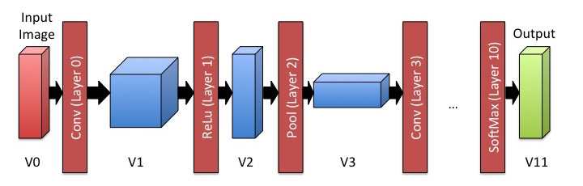
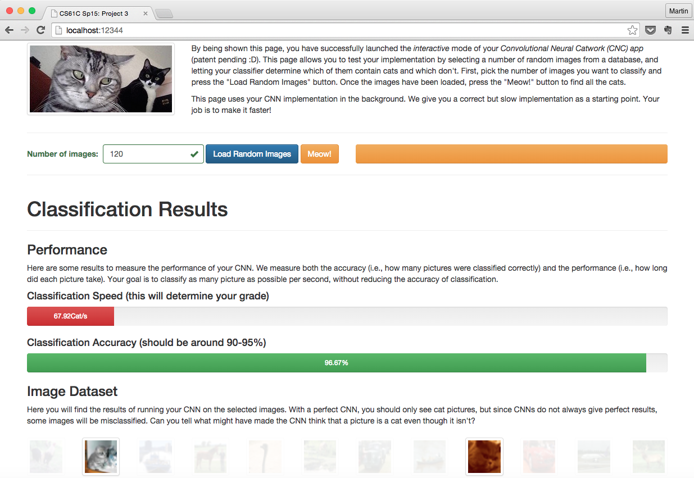

Due Sunday, April 19, 2015 @ 11:59pm
IMPORTANT INFO
In contrast to previous projects, Project 3 can only be done on the hive machines. We require software packages, hardware extensions and large data sets that are not available on other machines. If you haven't done so yet, you should set up an SSH client (such as PuTTY) if you would like to work remotely.
Updates
- Monday, April 13, 3:07am: Added -O3 compiler flag and adjusted the assignment and grading rubric to account for the substantially higher performance.
- Monday, April 13, 7:38pm: Small clarification that you should report the total time spent in each layer for Step 2.1 (i.e., not just the time of a single execution of the layer).
- Monday, April 13, 7:38pm: Some further clarifications regarding Step 2.1.
Introduction
In this project, you will apply some of the performance optimization techniques that you have learned in class to the real-world problem of classifying images using a Convolutional Neural Network (CNN). The task is simple: You will be given a large number of 32x32 images and have to find out whether or not each of them contains a cat.
How does a Computer tell a Cat from a Chair?
Image classification describes a problem where a computer is given an image and has to tell what it represents (usually from a set of possible categories). Image classification has long been considered a difficult challenge, and a lot of work has been done over the years to improve its accuracy (i.e., what fraction of pictures gets classified correctly).
Lately, Convolutional Neural Networks (CNNs) have emerged as a promising solution to this problem. In contrast to classical algorithms, which explicitly encode some insight about the real world into a function, CNNs instead learn a function by being presented with a large number of examples and adjusting themselves based on these examples -- this is called training. Once the CNN has learned the function (or to be more precise, an approximation of it), it can repeatedly apply it to inputs it has not seen before.
In this project, we give you a pre-trained CNN that can classify 32x32 images into 10 categories (such as dog, cat, car or plane). Using this CNN, we develop an application that takes a large set (i.e., 1000's) of images as input and finds those that contain cats. Unfortunately, our initial implementation is very slow -- your job is to make it faster!
How do Convolutional Neural Networks Work?
For this project, we do not require you to understand how CNNs work in detail. However, we want to give you enough information to get a sense of the high-level concepts. If you would like to learn more, we encourage you to take one of the Machine Learning or Computer Vision classes in the department, or check out this brief online-course.
At a high level, a CNN consists of multiple layers. Each layer takes a multi-dimensional array of numbers as input and produces another multi-dimensional array of numbers as output (which then becomes the input of the next layer). When classifying images, the input to the first layer is the input image (i.e., 32x32x3 numbers for 32x32 pixel images with 3 color channels), while the output of the final layer is a set of likelihoods of the different categories (i.e., 1x1x10 numbers if there are 10 categories).

High-level Overview of the CNN we use for this project (data dimensions not to scale).
Each layer has a set of weights associated with it -- these weights are what the CNN "learns" when it is presented with training data. Depending on the layer, the weights have different interpretations, but for the purpose of this project, it is sufficient to know that each layer takes the input, performs some operation on it that is dependent on the weights, and produces an output. This step is called the "forward" pass: we take an input and push it through the network, producing the desired result as an output. This is all that needs to be done to use an already trained CNN to classify images.
In order to train the network, we first perform the same forward pass. Afterwards, we compare the output with the correct result (e.g., the correct categorization) and then go backwards through the network to adjust the weights to get closer to this output -- this is called back-propagation. In Project 4, we will show you how to use this approach to train a network yourself, but in Project 3, we will give you a pre-trained network and you only have to worry about the forward pass.
For this project, we will be using a specific CNN that has been trained on the CIFAR-10 data set, which consists of 50,000 32x32 images showing 10 different categories. The network consists of 11 layers, each performing a particular operation on a specific size of input, producing a specific size of output. Throughout the project, you can assume this specific network with the provided weights.
Step 0: Obtaining the Files & Getting Started
Similarly to Project 1, we will be distributing the project files through Github. You can look back on the Step 0 for Project 1 for more specific steps. However, make sure that you are using your newly created Project 3 repository, which should be in the form of proj3-XX-YY.git - even if you have the same partner as in Project 1! The repository that contains the starter code is named proj3_starter.
An abridged version of the commands is reproduced below:
cd ~ # Make sure you are outside of any existing repositories (eg. ~/work) git clone git@github.com:cs61c-spring2015/proj3-XX-YY.git cd proj3-XX-YY # Go inside the directory that was created git remote add proj3_starter git@github.com:cs61c-spring2015/proj3_starter git fetch proj3_starter git merge proj3_starter/master -m "merge proj3 skeleton code"
Once you have obtained the files, you should first try out the application and make sure everything is working correctly. You can run the application by executing the following in your project directory:
make run
This will launch a webserver to which you can connect using your web browser (we highly recommend Google Chrome). If you are physically working on one of the hive machines, you can open a browser and navigate to http://localhost:12345 to access the page. Otherwise, if you use Linux or a Mac, you can run the following command on your own machine, which will allow you to connect to the hive machine and forward all traffic from one of your local ports to that machine (if you have a Windows machine, please use these instructions instead -- thanks Jeffrey!).
ssh -L 12345:localhost:12345 cs61c-XX@hiveYY.cs.berkeley.edu
If you are getting an error message that the port 12345 is already in use, another user is probably already running the web server on the same machine. In this case, you can run it on a different port (e.g., 22222) by running python cnn.py <port> instead of make run. Whichever port you choose, make sure to replace any occurence of 12345 in the instructions with this port.
After setting up port forwarding (and starting the web server on the hive machine), you should be able to navigate to http://localhost:12345 on your local browser. You should now be seeing the following page:

You should play around with the app a little bit and see how it can be used to find all the images of cats out of a much larger collection. Also note that the application is showing you the accuracy (i.e., how many pictures were correctly classified as cat/no cat) and the performance of the classifier. The performance of the version we gave you is very poor: it only reaches about 250 Cat/s (which will be our performance metric for this assignment, even though the correct term would be images classified per second).
We challenge you to speed this up by a factor of 12x, making the app achieve at least 3 KCat/s (=3,000 Cat/s).
Step 1: Finding your way around the project
We will first go through the project's code, in order to help you orient yourself. Note that this project is much more open-ended than previous assignments you have encountered in this course: you can speed up the application whichever way you like, as long as it still produces the correct results. Don't let this intimidate you -- we made sure that it is possible to reach the required speed-up without exploiting all the different possible optimizations.
Code Overview
All relevant code for this project can be found in a single file: src/cnn.c. You may change this file in whichever way you like, as long as it still performs the same computations as before, and does so correctly for all possible inputs. There are many different ways by which you can achieve substantial speed-ups on this code, and we want to give you full freedom to experiment with any of them.
The source code is divided into multiple sections. Each of these sections roughly corresponds to a different data type. The first data type is vol_t. It represents a three-dimensional array (or Volume) of numbers, which is used to hold the results between layers. In the figure above, these correspond to V0, V1, etc.
Next, we have a number of the different kinds of layers: conv, relu, pool, fc and softmax. You do not need to understand what these different layers are doing, but each of them has:
- A data structure holding a description of the layer's parameters. Note that each layer has a fixed set of parameters that don't change during execution. They determine (for example) the size of its input and output volumes, and are set when the CNN is defined. For example, the CNN we are using has 3 conv layers, each with slightly different parameters.
- A *_forward function which performs the layer's main operation. These functions first take the layer's struct, as well as an array of pointers to input and output volumes. They also accept start and end indices into this array. This allows each layer to process a batch of inputs at once, which you may use for your optimizations. For example, you could have an array with pointers to input volumes and set start = 5 and end = 9 to process inputs 5,6,7,8,9 at once and write the results into the corresponding entries of the output array.
- Two functions, make_* and *_load. The first generates a layer with a specific set of parameters, the second loads any weights for this layer from the file system. You probably won't need to ever edit any of these functions, unless you are making changes to the layer structure itself (which is why we included them in cnn.c).
The final important data structure is network_t, which holds all the information describing the CNN. This includes all layers, and an instance of each of the different intermediate Volumes. Note that these Volumes are not used for actually storing data (this is done by the batches we will describe below). They are there to make the dimensions of the different volumes easily available in one place.
Finally, all intermediate data is represented as batches. You can think of them as the intermediate data associated with a set of input images. While their type looks complicated (batch_t is shorthand for vol_t***), these are just two-dimensional arrays of pointers to Volumes. The first dimension tells you which layer the Volume belongs to (i.e., V0, V1, etc. in the figure above) and the second dimension tells you which input you are looking at. In the code we gave you, we only ever look at batches of size 1 (i.e., we process one sample at a time), but you will later need to modify your program to consider larger batches, in order to parallelize computation. Batches can be allocated using the make_batch function and are freed with free_batch.
Finally, the net_forward function takes a batch (as well as start/end indices) and applies the CNN to each entry from start to end by calling the forward functions on each layer. This function is used in net_classify_cats to take a set of input images, put them each into the V0 volume of a single-element batch, and then run the network on them, in order to classify them as cat or no cat. Be careful about these functions: These functions are called from outside cnn.c and therefore should continue to work as before, even though you will have to modify them as you optimize your implementation.
Running your Implementation
In addition to the application mode, we provide you with two other ways of running the CNN, which will be helpful during development:
- Testing: As you modify the application, you need to make sure that the results at every level of the CNN remain the same (up to a small delta, to tolerate floating point rounding errors). To help you check that none of the changes broke the program, you can run make test, which will run your implementation against 20 images to ensure that all results (including the intermediate Volumes) remain the same. We also run your program on a large data set and compare all the outputs, to catch bugs that were introduced when parallelizing the code. This is not completely sufficient for testing (and you may still have subtle bugs, e.g., to do with parallelism), but should give you a quick way to check for the most obvious errors.
- Benchmarking: To measure the impact of your optimizations, you can run the CNN from the command line by running make benchmark. This will run your CNN on a set of input images and measure its performance. Note that your performance can vary, for example as a result of other users on the same machine. When we grade your project, we will run it in isolation on its own machine, so it should perform at least as well as when you tested it. If you want to just quickly run the program, we also provide you with different sizes of benchmarks (through make benchmark-small, make-benchmark-large and make benchmark-huge).
Where do I start?
We realize that the above information is not sufficient to fully understand every detail of the code. Fortunately, you won't need to do so in order to make it run faster: by looking at the structure of the code, you should be able to see potential sources of parallelism and other ways to optimize the code. Below, we will give you some first steps to get begin, and also provide you with a number of hints to try out. From there, you should experiment with different techniques and see how well they work.
Step 2: Profiling & Amdahl's Law
Whenever you start optimizing some given code, you first have to determine where it spends most of its time. For example, speeding up a part of the program that only takes 5% of the overall runtime will at most get you 5% a speed-up and is probably not worth your time.
In lecture, you heard about Amdahl's law, which is a great way to estimate the expected performance impact of an optimization. As we saw in class, to apply Amdahl's law, we first have to find out what fraction of time is spent in the different parts of the program.
As the first part of your assignment, answer the following questions and put your responses into answer.txt in your project directory. Report all results with respect to the execution of make benchmark, which runs on a set of 2,400 images (you should report the cumulative times for processing all images, rather than individual runs or averages).
- Extend your cnn.c implementation to output the total amount of time spent in each of the layers of the Convolutional Neural Network. Run make-benchmark and write down the time spent in each layer in answers.txt, both as absolute time in ms and percentage of the total execution time. (Hint: we provide a function timestamp_us() that may be useful).
- Now, compute the percentage of time spent in each type of layer (e.g., conv or relu). What type of layer is taking up the largest fraction of runtime? Which one is taking up the smallest fraction?
- For each of the different types of layer, use Amdahl's Law to compute the overall speed-up if were able to make that type of layer 4x faster. Based on this computation, which layer should we focus our optimization efforts on?
(Don't forget to submit your answers.txt with your implementation!)
Step 3: Unrolling and other optimizations
Now it is time to optimize the CNN implementation! Use your results from Step 2 to guide your efforts -- there are only a few places in the application that are actually worth optimizing.
You should first try to speed up the computation by trying to apply conventional code optimizations. While we won't tell you all the exact steps, here are some hints that should help you get started:
- Sometimes you can replace a function by multiple specialized functions that do the same but are optimized for specific input values.
- Are there any places in the program where a variable always has the same value, but it is loaded from memory every time?
- Are there any places where you could do manual loop unrolling?
- Can you classify multiple samples at once instead of classifying them one after the other?
- Is there a better ordering of the different loops?
Once you have improved performance using these optimizations, you can start applying vectorization and parallelization to make the program even faster. Note that you have considerable freedom to apply any of these optimizations, and there is more than one correct solution. Try to experiment with different approaches and see which one gives you the best performance.
Step 4: SIMD Instructions
In your lab, you learned how to apply SIMD instructions to improve performance. The processors in the hive machines support the Intel AVX extensions, which allow you to do SIMD operations on 256 bit values (not just 128 bit, as we have seen in the lab). You should use these extensions to perform four operations in parallel (since all floating point numbers are doubles, which are 64 bit in size).
As a reminder, you can use the Intel Intrinsics Guide as a reference to look up the relevant instructions. You will have to use the
As a guidance, these optimizations should be able to give you a 2x speedup with relative ease. Note, however, that you won't need to achieve quite this performance to get a good grade in this project; the next step will get you a substantially larger speed-up.
Step 5: OpenMP
Finally you should use OpenMP to parallelize computation. Note that the easiest way to parallelize the classification of a large number of images is to classify batches of them in parallel (since these batches are independent). Note that you will need to make sure that none of the different threads overwrites each others' data. Just adding a #pragma omp parallel for is not enough, and will cause errors.
Node that the hive machines have 4 cores with two hyperthreads (HT) each. This means that you should expect a speed-up of 4-8x (note that hyperthreads mean that two different programs execute on the same physical core at the same time; they will therefore compete for processor resources, and as a result, you will not get the same performance as if you were running on two completely separate cores).
Your OpenMP implementation should give you a speed-up of at least 4x.
Grading Rubric
This is an open-ended project: we want to give you the freedom to experiment with whichever optimizations you can come up with. Your score will therefore be mostly determined by the performance of your implementation. We will take the KCat/s that your application achieves, multiply them by 10 and use this as a base score between 0 and 30 (i.e., if your implementation achieves 2 KCat/s, you will get 20/30 points; but if your implementation achieves more than 3 KCat/s, you will still only get 30 points). In addition, your answers to Step 2 are worth another 10 points. In summary, your overall grade (out of 40 points) will be calculated as:
Grade = min(30, (10 * Performance in KCat/s)) + (grade on answers.txt out of 10)
Note: We don't allow any form of pre-computation in this project. A guidance is that your application should perform every floating point operation that the original program does. If we encounter cases that attempt to achieve high performance by pre-computing the results, we consider this cheating and will give 0 points.
Competition!!!
Of course, it is possible to do substantially better than 3 KCat/s. Do you have what it takes to break the 5 KCat/s barrier? Great, because we are starting a competition: the teams who send us the fastest implementations by the end of the semester will not only be remembered as the winners of the CS61C Spring'15 Project 3 competition, but also receive a small amount of extra credit. We will announce the results of the competition in lecture and post them on the course website! (the exact submission date will be announced later during the semester)
Submission
Make sure that your implementation is correct and passes all the provided tests! If not, you risk losing all 30 possible points.
There are two steps required to submit proj3. Failure to perform both steps will result in loss of credit:
First, you must submit using the standard unix submit program on the instructional servers. This assumes that you followed the earlier instructions and did all of your work inside of your git repository. To submit, follow these instructions after logging into your cs61c-XX class account:
cd ~/proj3-XX-YY # Or where your shared git repo is submit proj3
Once you type submit proj3, follow the prompts generated by the submission system. It will tell you when your submission has been successful and you can confirm this by looking at the output of glookup -t.
Additionally, you must submit proj3 to your shared GitHub repository:
cd ~/proj3-XX-YY # Or where your shared git repo is git add -u git commit -m "project 3 submission" git tag "proj3-sub" # The tag MUST be "proj3-sub". Failure to do so will result in loss of credit. git push origin proj3-sub # This tells git to push the commit tagged proj3-sub
Resubmitting
If you need to re-submit, you can follow the same set of steps that you would if you were submitting for the first time, but you will need to use the -f flag to tag and push to GitHub:
# Do everything as above until you get to tagging git tag -f "proj3-sub" git push -f origin proj3-sub
Note that in general, force pushes should be used with caution. They will overwrite your remote repository with information from your local copy. As long as you have not damaged your local copy in any way, this will be fine.
References
- Learning Multiple Layers of Features from Tiny Images, Alex Krizhevsky, 2009.
- ConvNetJS, Andrej Karpathy.